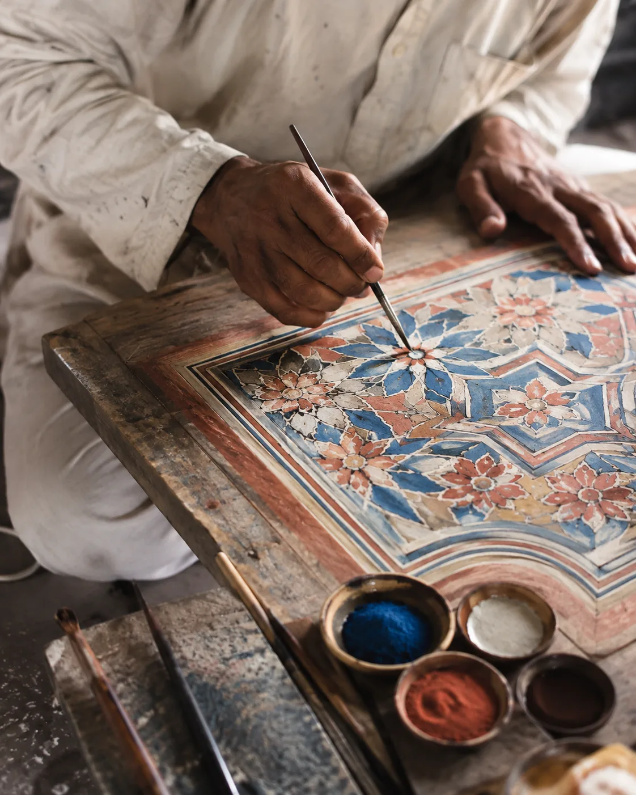

DEMO
Architecture & Built Heritage
DEMO — Notes from a painted courtyard
A development-only example showing how a researched place story can unfold through images, quotations and references.
12 Sept 2026
Read storyArchive database
Search and filter the complete Virsapur story collection.
1–12 of 427 stories
Explore researched places, objects and cultural memoryArchitecture & Built Heritage
A development-only example showing how a researched place story can unfold through images, quotations and references.
12 Sept 2026
Read story
Archaeology & Ancient Civilisations
An example archaeology story for testing archive filters and related content.
2 Oct 2026
Read story
Living Traditions
A sample living-traditions entry showing an image-led archive card.
18 Oct 2026
Read story
Sacred Heritage
A demonstration sacred-heritage story with place and programme relationships.
1 Nov 2026
Read story
Architecture & Built Heritage
A built-heritage example for pagination, search and featured-story testing.
12 Nov 2026
Read story
Objects & Material Culture
A sample object story showing the full breadth of the Archive taxonomy.
3 Dec 2026
Read story
Sacred Heritage
A Preview-only example of an explicitly assigned connection to Wazir Khan Mosque. This is not a researched article.
Read storyArchaeology & Ancient Civilisations · Mohenjo-daro · Sindh
Brick-lined wells bring Mohenjodaro into focus as a city of repeated daily tasks, specialised construction and carefully arranged access to water.
Read storyArchitecture & Built Heritage · Mohenjo-daro · Sindh
Mohenjo Daro’s lanes reveal a city that was planned, used and altered. Thresholds and blocked drains tell a more intricate story than the familiar grid diagram.
Read storyArchitecture & Built Heritage · Mohenjo-daro · Sindh
Mohenjo Daro’s architecture is best read through materials, levels and connections—not through confident labels for buildings whose original names are unknown.
Read storyObjects & Material Culture · Mohenjo-daro · Sindh
The small steatite figure known as the Priest-King is an extraordinary sculpture, but its familiar name remains an interpretation rather than an identified office.
Read storyArchitecture & Built Heritage · Lahore · Punjab
Lahore’s Anarkali tomb holds more than a celebrated romance: its architecture and successive uses reveal the making, adaptation and preservation of public memory.
Read storyTry another keyword, or clear a filter to explore more stories.